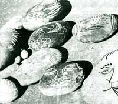

Are you lonely? Have you spent years in a fruitless search for that Mr. or Ms. Right, the one with a granite chin or Skin of alabaster? Do You have an urge to be surrounded by hardheaded, solid citizens who can be counted on to stay in one place? Is that what's botherin' you, brother?
If so, you don't have to look any further than your nearest stream bed or shoreline to find the companionship you crave. Take a stroll, notice how every water-smoothed stone-be it igneous, metamorphic, or sedimentary-fairly screams (well, beckons?) to you that it wants to be given expression.
Take home the most charming rocks that you meet (be careful, though, not to break up any families). Then, with a few small brushes and some goodgrade paint, bring the inner personalities of these stalwarts to the surface. Name them if you wish-Peter" or "Rosemary", for example-and give them cozy little beds along your patio, pool, or maybe in the cool shade of some shrubbery. Talk to them . . . they won't contradict you.
See. You feel better, now . . . don't you?
|
 |
|
|